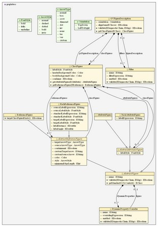

Emf2gv is classically used to represent EMF models. But as anybody who works with EMF has to use Ecore resources. That is why a specific Graphical Description has been created and embedded to emf2gv ready to use with any EMF Ecore model.
To use this feature, one simply has to right click on an Ecore resource, and select Run As > EMF To Graphviz Transformation in the popup menu.
As an illustration, here is the diagram that emf2gv generates for the graphdesc model itself :
If you plan to use this feature in a standalone application, you will have to use the graphical description that emf2gv uses. A wizard will help you to retrieve this file by doing the following actions :